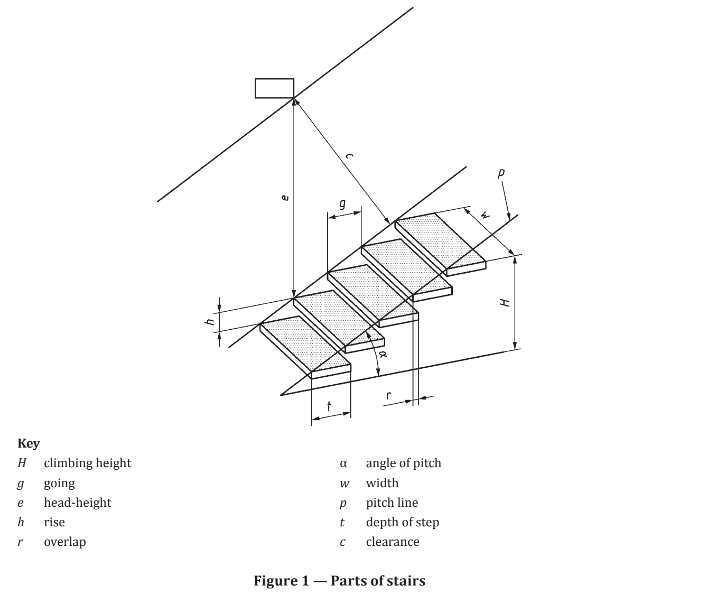
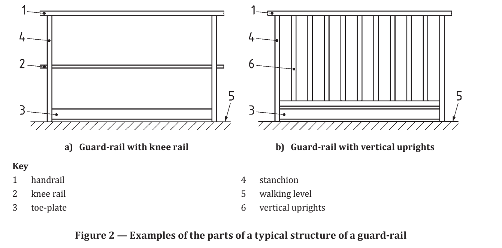
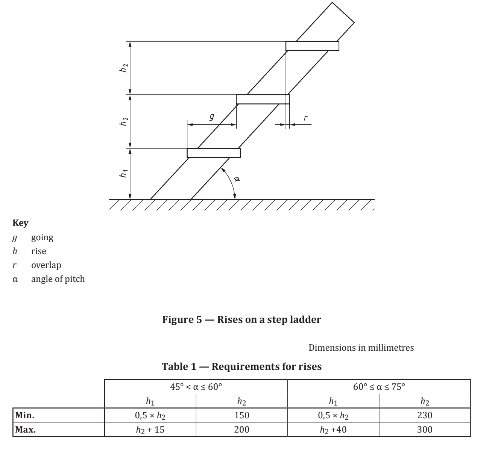
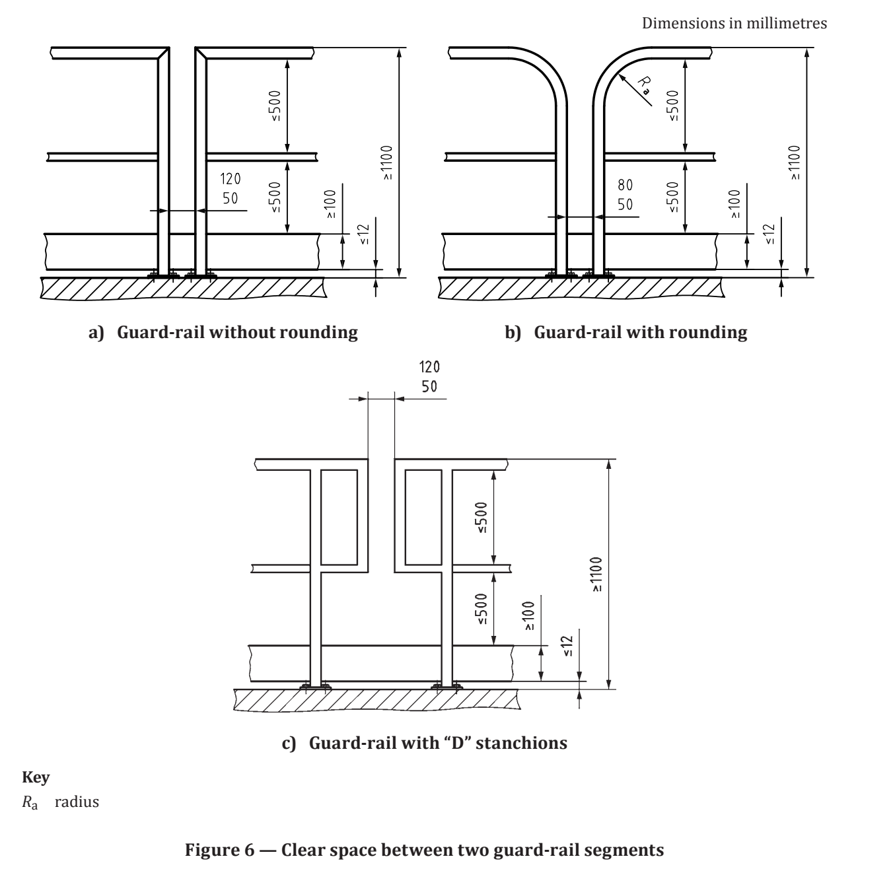

Clauses 1–8 of the supplied ISO 14122-3 document are retained below, grouped by whole clause. Open a clause to read its subsections. The source PDF preserves the original formulas, tables and figures for checking.
Open original source PDF2016 supplied edition · numbered clauses and paragraphs through Clause 8. Open only the paragraph you need. Text is extracted from your PDF; source figures are retained. This part covers stairs, stepladders and guard-rails, not the fixed-ladder rules of Part 4.
Scope This part of ISO 14122 gives requirements for non-powered stairs, stepladders and guard-rails which are a part of a stationary machine, and to the non-powered adjustable parts (e.g. foldable, slidable) and movable parts of those fixed means of access. NOTE 1 “F ixed” means of access are those mounted in such a manner (for example, by screws, nuts, welding) that they can only be removed by the use of tools.
This part of ISO 14122 specifies minimum requirements that also apply when the same means of access is required as the part of the building or civil construction (e.g. stairs, stepladders, guard-rails) where the machine is installed, on condition that the main function of that part of the construction is to provide a means of access to the machine. NOTE 2 Wh ere no local regulation or standards exists, this part of ISO 14122 may be used also for means of access which are outside the scope of the standard.
It is intended that this part of ISO 14122 be used with ISO 14122-1 to give the requirements for steps, stepladders and guard-rails. The ISO 14122 series as a whole is applicable to both stationary and mobile machinery where fixed means of access are necessary.
It is not applicable to powered means of access such as lifts, escalators, or other devices specially designed to lift persons between two levels. This part of ISO 14122 is not applicable to machinery manufactured before the date of its publication.
Normative references The following documents, in whole or in part, are normatively referenced in this document and are indispensable for its application. For dated references, only the edition cited applies.
For undated references, the latest edition of the referenced document (including any amendments) applies. ISO 12100, Safety of machinery — General principles for design — Risk assessment and risk reduction ISO 14122-1:2016, Safety of machinery — Permanent means of access to machinery — Part 1: Choice of fixed means and general requirements of access
Terms and definitions For the purposes of this document, the terms and definitions given in ISO 12100, ISO 14122-1 and the following apply.
stairs step ladders succession of horizontal levels — steps (3.1.11) and landings (3.1.5) — allowing passage on foot from one level to another Note 1 to entry: Stairs/step ladders are composed of the elements shown in Figure 1 and defined in 3.1.1 to 3.1.16. Note 2 to entry: For details on the angle of pitch (3.1.9) for stairs/step ladders, see ISO 14122-1:2016, 3.2 and 3.3.

climbing height vertical distance between the reference level and the landing (3.1.5) Note 1 to entry: See H in Figure 1.
flight uninterrupted sequence of steps (3.1.11) between two landings (3.1.5)
going horizontal distance between the step nosing (3.1.12) of two consecutive steps Note 1 to entry: See g in Figure 1.
head-height minimum vertical distance, clear of all obstacles (such as beams, ducts, etc.) above the pitch line (3.1.8) Note 1 to entry: See e in Figure 1.
landing horizontal resting area situated at the end of a flight (3.1.2)
walking line theoretical line indicating the average path of the users
overlap difference between the depth of the step and the going (3.1.3) Note 1 to entry: See r in Figure 1.
pitch line notional line connecting the leading edge of the nosing (3.1.12) of successive steps (3.1.11) taken on the walking line (3.1.6) and which extends down to the landing at the bottom of the flight (3.1.2) from the nosing on the landing at the top of the flight Note 1 to entry: See p in Figure 1.
angle of pitch <stair or step ladder> angle between the pitch line (3.1.8) and its projection on the horizontal level Note 1 to entry: See α in Figure 1.
rise height between two consecutive steps (3.1.11) measured from the tread surface of one to the tread surface of the next Note 1 to entry: See h in Figure 1.
step horizontal surface on which one places the foot to go up or down the stair/step ladder (3.1)
nosing top edge at the front of the step (3.1.11) or landing (3.1.5)
string flanking framework element supporting the steps (3.1.11)
width clear distance over the outside faces of the step (3.1.11) Note 1 to entry: See w in Figure 1.
depth of step clear distance from the leading edge or the nosing (3.1.12) to the rear of the step (3.1.11) Note 1 to entry: See t in Figure 1.
clearance absolute minimum clear distance between any obstacle and the pitch line (3.1.8), measured at an angle of 90° from the pitch line Note 1 to entry: See c in Figure 1.
guard-rail device for protection against accidental fall sideways with which stairs/step ladders (3.1) or landings (3.1.5), platforms and walkways may be equipped Note 1 to entry: Typical parts of a guard-rail are shown in Figure 2 and defined in 3.2.1 to 3.2.5. a) G uard-rail with knee rail b) Guard-rail with vertical uprights

handrail rigid top element designed to be grasped by the hand for body support which can be used individually or as the upper part of a guard-rail (3.2) Note 1 to entry: See 1 in Figure 2.
knee rail rigid element of the guard-rail ( 3.2) placed parallel with the handrail ( 3.2.1), giving extra protection against the passage of a body Note 1 to entry: See 2 in Figure 2.
stanchion vertical structural element of the guard-rail (3.2) to anchor the guard-rail to the platform or stair (3.1) Note 1 to entry: See 4 in Figure 2.
toe-plate rigid lower part of a guard-rail (3.2) to prevent the falling of objects from floor level Note 1 to entry: See 3 in Figure 2. Note 2 to entry: A t oe-plate also reduces the free space between the floor and knee rail (3.2.2) to prevent the passage of a body.
self-closing gate pivoting part of the guard-rail (3.2) which enables access through the guard-rail Note 1 to entry: See Figure 10. Note 2 to entry: The rest position is closed.
mezzanine gate gate designed for loading and unloading goods to and from mezzanine floor providing a permanent collective fall protection Note 1 to entry: See Figure 3. a) Pivot gate b) Vertical gate
transfer zone area defined by the loading zone and the space needed for the movement of the mezzanine gate (3.2.6)
Construction, materials and imposed loads are detailed in paragraphs 4.1–4.2.2 below.
Construction and materials Stairs, step ladders and guard-rails — including fittings, hinges, anchorage points, supports and mountings — shall be designed and constructed and the materials selected so that they withstand the foreseeable conditions of use (see ISO 14122-1:2016, Clause 5). In particular, at least the following details shall be taken into account: a) dimensions of stairs, stepladders and guard-rails shall be in accordance with available anthropomorphic data (see also ISO 15534-1 and ISO 15534-3); b) guard-rails shall be designed and constructed to prevent objects falling; b) for hazards generated by falling objects through openings on steps, see ISO 14122-2:2016, 4.2.4.5.1.
Opening or closing of moving parts (gates), of adjustable parts (e.g. foldable, slidable) and of movable parts shall not cause further hazards (for example by shearing or by falling) to users and other persons in the vicinity.
Design and construction for the structure and the steps
The structure and the steps shall be designed to satisfactorily resist the foreseeable imposed loads. The unfactored loads applicable used for the structure of the stair or stepladder in the industrial field can vary.
For each application the expected unfactored loads shall be defined. As a minimum the following assumptions for unfactored loads shall be applied in calculations to be considered, but higher values can be necessary.
Higher values shall be applied when higher loading is foreseeable: — for low density pedestrian traffic without load, 1,5 kN/m2; — for low density pedestrian traffic with load or for high density pedestrian traffic, 5 kN/m2;
Steps shall resist the following minimum unfactored loadings: — if the clear width w < 1 200 mm then 1,5 kN shall be distributed over an area of 100 mm × 100 mm , where one boundary is the leading edge of the nosing applied at the middle of the stair width; — if the clear width w ≥ 1 200 mm then respectively two loads of each 1,5 kN shall be distributed simultaneously over each of the 100 mm × 100 mm , areas applied at the most unfavourable points spaced at intervals of 600 mm where one boundary is the leading edge of the nosing. The deflection between the structure supporting the steps and the steps under an unfactored load shall not exceed 1/300th of the span of the step or 6 mm, whichever is the lower.
Stair dimensions and associated requirements are listed individually in 5.1–5.10 below.
Going, g, and rise, h, shall meet Formula (1): 600 ≤ g + 2h ≤ 660 (dimensions in millimetres) (1 )
The going (distance t minus r, see Figure 4) shall be between 210 mm and 310 mm.
The overlap, r, of the step shall be ≥10 mm and shall apply equally to landings and floors.
On the same flight, h shall be constant. Where it is not possible, the rise of the first step in the flight, h1, may be reduced by maximum of 15 %.
The uppermost step shall be level with the landing (see Figure 4).
Head-height, e, shall be 2 300 mm minimum (see Figure 1).
Clearance, c, shall be 1 900 mm minimum (see Figure 1).
The clear width, w, of a stair shall be a minimum of 800 mm. When the stairway is usually subject to the passage or crossing of several persons simultaneously, the clear width shall be increased to 1 000 mm.
The clear width of the stair, when designated as an escape way, shall meet the requirements of appropriate regulation. For single flights with heights less than 1500 mm , the clear width , w, may be reduced from 600 mm to 500 mm.
Due to the design of the machine, the environment or occasional use, e.g. less than 30 days/year and less than two hours/day, the clear width , w, may be reduced from 800 mm to 600 mm . If the available space at the floor level is restricted due to pipework, electric, or constructive reason of machinery, the stair width at floor level may be reduced to 500 mm minimum, and for a maximum height of 200 mm (see ISO 14122-2:2016, Figure 1).
Any obstruction such as pipes or cable trays fitted along stairs at either head-height or finished floor level shall reduce available width to not less than 500 mm (see ISO 14122-2:2016, Figure 1).
In the case of a single straight flight (see 3.1.2), the climbing height shall not exceed 4 000 mm. In case of multiple flights, the climbing height, H (see Figure 1), of the individual stairs shall not exceed 3 000 mm and a landing is necessary before continuing on to another flight.
The length of the landing shall be equal or greater than the width of the stair but at least 800 mm.
For requirements related to guard-rails for stairs, see 7.2.
Stepladder dimensions are listed in 6.1–6.8 below.
The minimum going, g, shall be 80 mm (see Figure 5).
The rises h1 and h2 shall be in accordance with Table 1 (see Figure 5).

The overlap, r, of the step or the landing shall be ≥0 mm (see Figure 5).
The clear width between stringers, as well as guard-rails, shall be within the range of 500 mm t o 800 mm, but preferably 600 mm.
On the single flight, the rise shall be constant wherever possible. In the case where it is not possible to maintain the height of the rise between the level of departure and the first step, it may be reduced by a maximum of 15 %.
Head-height, e, shall be 2 300 mm minimum.
Clearance, c, shall be 850 mm minimum.
The climbing height, H, of a single flight shall not exceed 3 000 mm. For multi-flights, additional safety measures should be considered.
NOTE For the head-height (e), clearance (c) and climbing height (H), see Figure 1.
Platform guards, stair handrails and gates are detailed in 7.1–7.4.2 below.
Platform, walkway and landing guard-rail requirements are listed individually in 7.1.1–7.1.11 below.
When the height of the possible fall exceeds 500 mm, a guard-rail shall be installed.
A guard-rail shall be provided when the gap between a platform and the structure of a machine or wall is greater than 180 mm or if the protection of the structure is not equivalent to a guard-rail (see ISO 14122-2:2016, 4.2.4.5). However, a baseboard or toe-plate shall be provided when the gap between the platform and neighbouring structure is greater than 20 mm (see ISO 14122-2:2016, 4.2.4.5).
The minimum height of the guard-rail shall be 1 100 mm. The height of the handrail shall be ≤1 100 mm.
The handrail shall be parallel to the walking line.
The guard-rail shall include at least one intermediate knee rail [see Figure 2 a)] or any other equivalent protection. The clear space between the handrail and the knee rail, as well as between the knee rail and the toe-plate, shall not exceed 500 mm.
When vertical uprights are used instead of a knee rail [see Figure 2 b)], the clear horizontal distance between those uprights shall be 180 mm maximum.
A toe-plate with a minimum upstand of 100 mm shall be placed 12 mm maximum from the walking level and the edge of the platform (see Figure 6), as well as stair landings (see Figure 7). If there is a gap between the toe-plates of adjacent guard rail segments, this gap shall be not more than 20 mm.
The distance between the axes of the stanchions is preferred to be limited to 1 500 mm. If this distance is exceeded, specific attention shall be paid to the stanchion anchoring strength and the fixing devices.
Dimensions in millimetres a) G uard-rail without rounding b) Guard-rail with rounding c) Guard-rail with “D” stanchions
In the case of an interrupted handrail (guard-rail segments), crushing and shearing based on movement between two segments shall be avoided. If this cannot be excluded by design, the following distances to prevent hand traps and falling through shall be required: a) without rounding, the clear space between the two stanchions shall not be less than 50 mm and not greater than 120 mm [see Figure 6 a)]; b) with rounding, the clear space between the two stanchions shall not be less than 50 mm and not greater than 80 mm [see Figure 6 b)] .
The radius Ra shall be 200 mm maximum.

Where access through the guard-rail is required, a gate shall be used (see 7.4)
Ends of the handrail shall be designed so that significant hazards caused by sharp edges of the product or by catching of the user’s clothing are eliminated or reduced to a minimum.
Fixable or foldable guard-rails shall be fitted with elements preventing unintentional opening.
See the stair requirements in 7.2.1 and stepladder requirements in 7.2.2.
Stair handrail and guarding details are listed in 7.2.1.1–7.2.1.5 below.
A guard-rail shall be fitted whenever the height to climb exceeds 500 mm, and when there is a lateral space adjacent to the string which is greater than 120 mm, in order to provide protection on the side of the stair where this gap exists.
The space between the handrail and the stringer shall be closed at least with one knee rail or any equivalent device. The clear space between the handrail and the knee rail, as well as between the knee rail and the stringer, shall not exceed 500 mm (see Figure 7).
A stair shall have two handrails. Handrails on stairs (see Figure 7) shall be continuous.
When for technical reasons this is not practicable, e.g. foldable, adjustable systems the following requirements shall apply: a) the gap between the handrails shall not be less than 50 mm and not greater than 120 mm; b) the ends of the handrail shall be designed so, that significant hazards caused by sharp edges of the product or by catching of the user’s clothing are eliminated or reduced to a minimum; c) adjacent handrails shall align. If the stairs are adjacent to a wall, or some other solid structure, and less than 1 20 0 mm wide, then one handrail, on the otherwise unprotected side, is permitted, provided that any gap between the stair and the wall or structure complies with 7.2.1.1.
The handrail shall be parallel to the walking and pitch line. The handrail shall start at least vertically above the beginning of the stair.
The design of the handrail shall avoid the entrapment of the clothes. Stairs shall be designed to minimize the risk of the foot slipping laterally of the step.
NOTE Th is can be done, for example, by stringers. In this case, additional means such as toe-plates are not required.
The vertical height of the handrail on a stair shall be between 900 mm and 1 000 mm above the nosing on the step of the flight and be a minimum of 1 100 mm abo ve the walking level on the landing. The shape of the handrail should have a diameter between 25 mm t o 50 mm or an equivalent shape, to provide a good grip for the hand.
The length of the handrail shall be clear of obstacles within a distance of 75 mm, with the exception of the supports (see Figure 8). For distances shorter than 500 mm, the distance may be reduced to 50 mm.
Dimensions in millimetres Figure 8 — Minimum gap between the handrail and any obstacle
Handrails for st ep ladders
Step ladders shall have two handrails. The clear width (dimension x) between the pitch line of the step ladder to the handrail should be as shown in Figure 9 and Table 2.
The handrail shall commence from a maximum distance of 1000 mm measured vertically from the bottom of the ladder (see Figure 9).
| Pitch θ | Clear width x (mm) |
|---|---|
| 45° | 625 |
| 50° | 500 |
| 55° | 375 |
| 60° | 250 |
| 65° | 200 |
| 70° | 150 |
| 75° | 100 |
Table 2 examples from the supplied standard. x is measured between the pitch line and handrail as shown in Figure 9.
Additional fall-protection when steps, stairs or ladders are near guard-rails of working platforms When additional steps, stairs or ladders are installed near guard-rails of working platforms, the height of 1 100 mm will not always be sufficient as fall protection. In this case, additional protective measures (e.g. extension of guard-rail height) are required (see ISO 14122-4:2016, Figures 16 and 17).
Gates
Self-closing gate A self-closing gate shall be used for passage of persons and shall meet the requirements of the adjacent guard-rails. Divergent to 7.1.6, a toe-plate is not required.
Shear and crushing points shall be avoided. The dimensions shall be in accordance with Figure 6.
Gates shall be a) self-closing, NOTE Se lf-closing can be achieved, for example, by spring or gravity force. b) held in closed position but not locked, c) designed to open easily onto the platform or floor, and d) close against a firm stop to prevent users pushing against them and falling through the opening.
Mezzanine gate The mezzanine gate shall comply with the requirements of 7.1, except 7.1.7 and 7.4. 2. In addition to the general requirement (see Clause 4), the mezzanine gate shall be designed in a manner that — it allows the operator to place and remove the load (e.g. a pallet) without being exposed to the risk of falling, — it allows the operator to be situated outside of any danger zone during the manual control of the gate, — it shall not restrict the movement of the persons in the transfer zone when the gate is open and the gate on the ramp/edge is closed, — at the transfer zone, the space between the platform and the lower edge of the gate shall have a height of less than 500 mm in the respective closed position, — the manual operating force shall not exceed recommended force limits for machinery operation (see EN 1005–3:2002+A1:2008 and EN 1005–2:2003+A1:2008), — the operator shall have a clear view on the transfer zone during the manual closing operation of the gate so that the risk of entrapment is minimized (see ISO 12100:2010, 6.2.2), — it is self-closing in a stable position when released using e.g. effects of gravity, — crushing and shearing shall be avoided during movement, in particular during manual operation at the control position, and this can be achieved when the openings are 100 mm or more (see ISO 13854), — the vertical openings shall be less than 180 mm wide between vertical moving parts of the gate, — the maintenance points are accessible without the risk of falling, — a toe-plate shall be only provided on that side of the mezzanine gate where there is the risk of falling.
Depending on the design, the opposite moving gate shall have a gap of 120 mm between its lower surface and floor level to avoid crushing of feet.
Verification by calculation or testing is addressed in 8.1–8.4 below.
General The safety requirements may be verified by testing or calculation. a) When testing is chosen, the test procedures described in this clause shall be used. b) When calculation is chosen, the requirements and assumptions of this clause shall to be taken into account so that strength verification of both methods is comparable.
Testing of guard-rails
General The testing is carried out at a guard-rail element with three stanchions, hand- and knee rail, which is mounted on the walkway. All loads ( F) are concentrated loads based on a minimum service load of 300 N/m in accordance with 8.2.1.1 or 8.2.1.2.
The load shall be applied horizontally without introducing dynamic loading, first at the level of the centre of the handrail at the middle stanchion (Position 1, Figure 11 ). In the second test, the load shall be applied at the centre of the handrail at the least favourable point between two stanchions (Position 2, Figure 12 ).
The deflections, f1 and f2, are measured at the centre line of the handrail by a deflection gauge. In the first test, deflection f1 is measured horizontally at position “ L” (see Figure 1 1 ); in the second test, deflection f2 is measured at position “l” (see Figure 12).
The supplied PDF prints this heading as 8.2.2 and then labels the load paragraphs 8.2.1.1–8.2.1.3. The source numbering is retained here.
Load for verification of usability The load for verification of usability is represented by Formula (2) : FU = 300 N/m × L (2)
Load for verification of strength The load for verification of strength is represented by Formula (3) : FS = γ × FU (3) where the material factor γ = 1,75 for steel and aluminium is derived using Formula (4): FS = 525 N/m × L (4) NOTE Wh en using other materials, e.g. GRP (glass-reinforced plastic), higher values and impact testing might be required.
Preload The preload is represented by Formula (5): FP = 75 N/m × L (5 )
Testing procedure
Testing at Position 1 To avoid setting effects, the preload, F P, is applied to the handrail in Position 1, as shown in Figure 11, for 1 min. After removing the load, the dial has to be reset to zero.
The load, F U, shall be applied in Position 1 the same way. The deflection during the application of the load shall not exceed 30 mm.
After measuring the deflection, the load shall be increased to FS. Apply FS for one minute.
After removing the load, the permanent deflection shall not exceed 0,3 % of the height, H.
Testing at Position 2 To avoid setting effects, the preload, FP, shall be applied to the guard-rail in Position 2, as shown in Figure 12, for one minute. After removing the load, the dial has to be reset to zero.
The load, F U, shall be applied in Position 1 the same way. The deflection during the loading shall not exceed 30 mm.
After measuring the deflection, the load shall be increased to FS. Hold FS for one minute.
After removing the load, the permanent deflection shall not exceed 0,3 % of the distance, L.
Testing of steps of a stair
General To verify the requirements given in 4.2, a test shall be carried out to measure the deflection on individual steps of a stair. The test (see Figure 1 3 ) shall be carried out on part of the stair comprising at least two steps.
Fix the sample to the ground and supporting wall (e.g. with a block, see Figure 1 3 ) so that there is no movement of the sample structure during testing. Depending on the width (clear width, w, between the stringers and the supporting structure), the test is carried out with one test load (see Figure 1 4 ) or two test loads (see Figure 15).
The loads shall be applied to a rigid block (underlayment) with maximum dimensions of 100 mm × 100 mm and having no sharp edges. The test load is represented by Formula (6): FS = γ × Fd (6) where the minimum design load, Fd, is 1,5 kN and the material factor γ = 1,75 for steel and aluminium.
To avoid measurement errors caused by setting effects, the tested part of a stair should be loaded first by a preload, FP = 0,25 × FS.
Testing procedure Place the rigid 100 mm × 100 mm block(s) 600 mm apart at the most unfavourable point/points on the step in accordance with Figure 1 3 , Figure 14 and Figure 15). Slowly apply the preload(s), FP, on the rigid block(s) and hold the loads for at least one minute.
After removing the load, the dial of the measuring device shall be reset to zero. Then test load(s), FS, shall be applied slowly and hold at position for at least one minute.
After removing the load, the permanent deflection shall not exceed 0,3 % of the span or 6 mm.
Testing of stepladders For testing, EN 131-2 can be used as a source of knowledge.